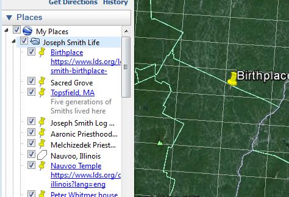
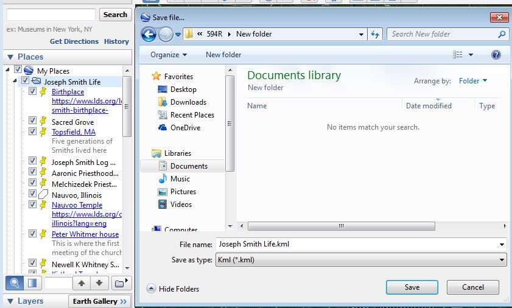

End User Documentation
Purpose of the Software
The purpose of the code was to create a website that would allow a user to choose
18 different locations via buttons and a dropdown list that represent locations where
significant events in the life of the Prophet Joseph Smith occurred. This type of
project can be useful for many different applications; for example, if a company wished
to display office locations, areas of interest for sales, various types of record keeping
and happenings at a specific location -- the options are endless.
HTML, JavaScript, CSS and OpenLayers3 were all used together in this project which presented
a unique learning experience. Web Mapping is becoming very popular so using OpenLayers3,
which is an open source JavaScript library to display map data on the web, is very beneficial
for the students who created this project.
Downloading the Code
A web-based Git repository hosting service called GitHub was used for this project. It is a free
service when the code created is open source. To obtain the code the user simply has to search
for repository called GISdragons/GISdragons.github.io inside the github search engine. When the
repository appears, the code used for the project is visible and able to be accessed.
Resrictions
Configuring the Input Data
One of the very first steps a user must take to create a scripts that will perform the functions
mormonhistorygis.com demonstrates is to create a kml file which contains the data necessary for
the points on the map. This was done by the authors using GoogleEarth. The kml file was then modified
to include any additional data desired such as a description, image, zoom, etc. The authors also
created two icons from the Kirtland and Nauvoo temples to be displayed on the map in this same file.
The following figures show how to create the kml file and show the file containing the points used for
this project used for this project. To create a point, right click on the file, click addpoint. T
he user can then add a name and description. Right click on the folder and save type as .kml.

